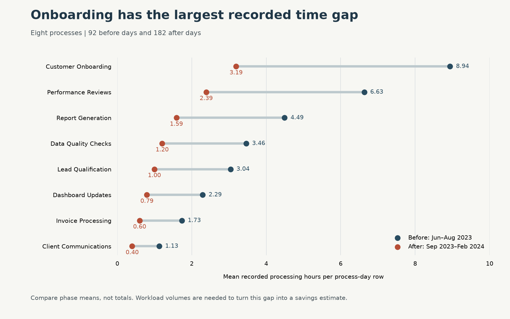

Operations analytics · Python
Faster onboarding. How much capacity?
Customer onboarding averages 8.94 recorded hours in the first phase and 3.19 in the second. That is the largest time gap among the eight processes in this dataset.
See the first findingKey figures
Faster onboarding is a clue. How much capacity does it create?
It makes onboarding a sensible place to investigate first. The tempting next step is to multiply the difference by a labour rate and call it savings.
I stopped one step earlier: the file does not say how many cases those hours represent.
This portfolio case uses simulated process and productivity records; it does not represent an implemented client transformation.
Compare like with like before ranking the opportunity
Before and after mean recorded processing hours for eight processes

The process file has one row per process per day. Its first phase spans 92 days, June–August 2023; the second spans 182 days, September 2023–February 2024. A comparison of total hours would mix process performance with the length of the observation period.
I compared means within each process instead. The result puts onboarding first by absolute difference, followed by performance reviews and report generation.
Mean recorded processing hours by process
| Process | Before mean hours | After mean hours | Difference in hours |
|---|---|---|---|
| Customer Onboarding | 8.94 | 3.19 | 5.75 |
| Performance Reviews | 6.63 | 2.39 | 4.25 |
| Report Generation | 4.49 | 1.59 | 2.91 |
| Data Quality Checks | 3.46 | 1.20 | 2.26 |
| Lead Qualification | 3.04 | 1.00 | 2.04 |
| Dashboard Updates | 2.29 | 0.79 | 1.50 |
| Invoice Processing | 1.73 | 0.60 | 1.13 |
| Client Communications | 1.13 | 0.40 | 0.73 |
These are means of the source’s recorded process-day values. They are not validated hours per customer or hours saved per employee. Case volume, case complexity and the meaning of Processing_Time_Hours need to be established before making either claim.
The people data asks a different question
The second file looks like an employee productivity panel. It has 599 rows, but only 404 distinct employee-month keys. There are 158 keys with multiple records, leaving 195 rows beyond one record per key.
Those extra records might have a legitimate explanation, such as separate assignments. The file does not document one. Dropping them arbitrarily could remove real work; treating every row as a distinct employee could inflate headcount. I therefore report the issue and leave retention, individual productivity changes and overtime savings unestimated.
Where I would start an operational review
Follow one onboarding case from request to completion. Agree whether the recorded time is hands-on work, elapsed time or a daily total, then collect completed-case counts and complexity alongside it. Check whether a faster process moves work to another team or increases rework.
With that denominator in place, compare time per completed case and quality over matched periods. A small pilot with a comparable team or queue would provide a stronger basis for deciding whether to expand the change.
The chart gives the review a starting point. The missing workload definition tells us what must be measured before promising capacity or cost savings.
Inspect the work
python run_analysis.pyPython 3 standard library only. Optional chart regeneration: python run_analysis.py --chart with matplotlib installed.
The run checks 2,192 process-day records for unique keys, complete daily coverage, eight processes per day and numeric bounds. Phase differences are descriptive, without a control group. Error-rate averages in the output are unweighted because task volumes are absent. No ROI is calculated.